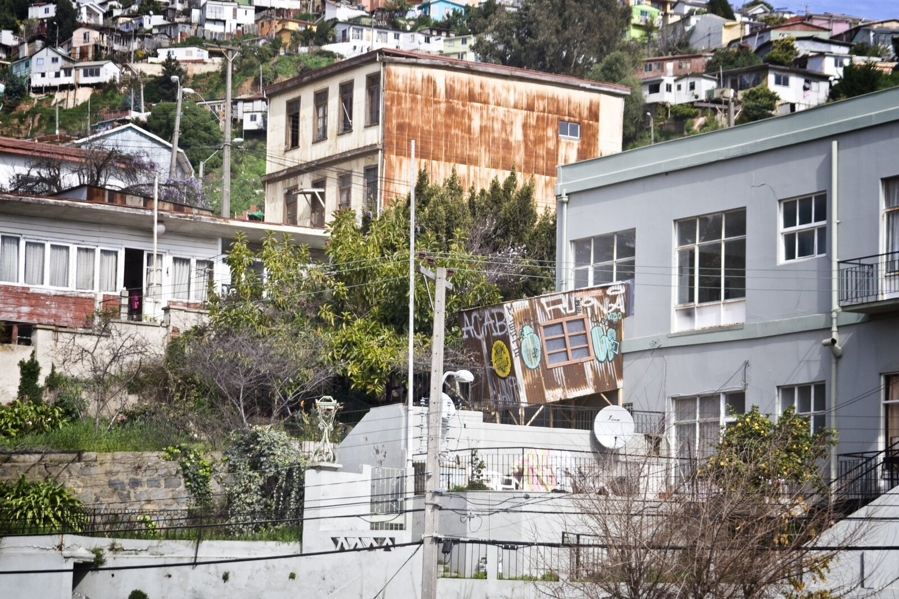
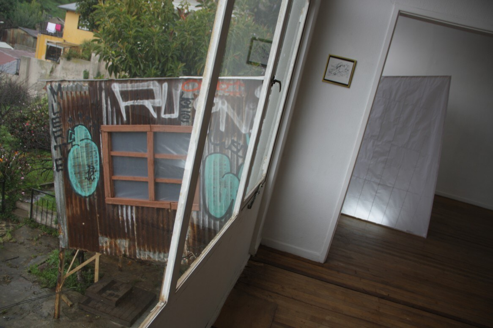
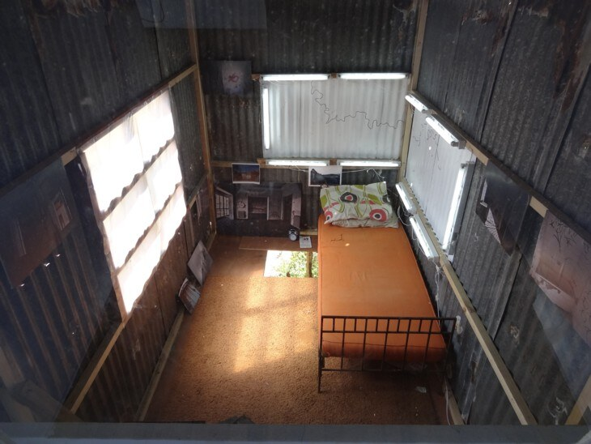
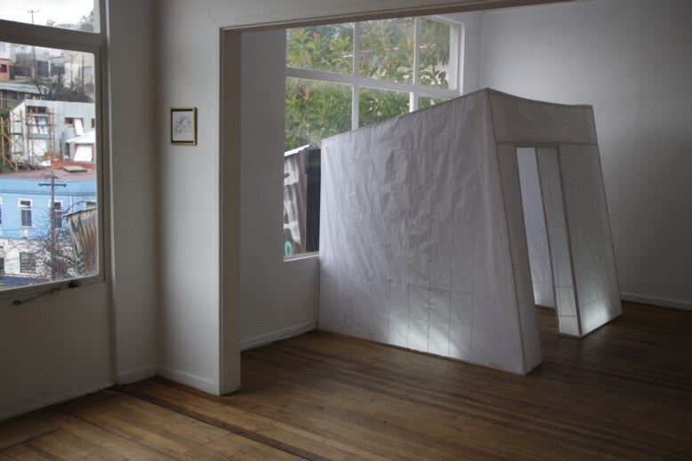
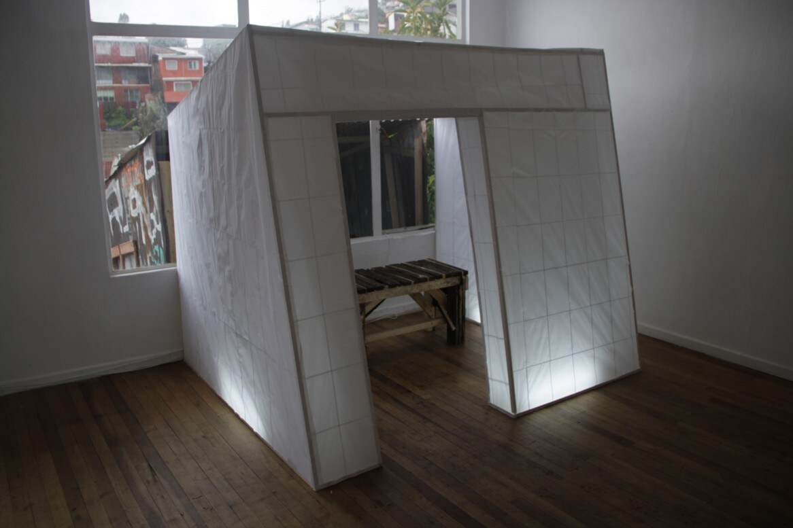

Dossier Nº 010
El Allegado / La Venida de los Cerros
Intervención habitacional en el Cerro Yungay, con maderas, latas, tubos fluorescentes, cables, pinturas, papel de cuaderno de líneas, pegamentos, fotografías, catre, colchón, almohadas, alfombra y cáscara de televisor.






UbicaciónVALPARAÍSO
33°03′S · 71°37′O